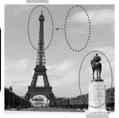
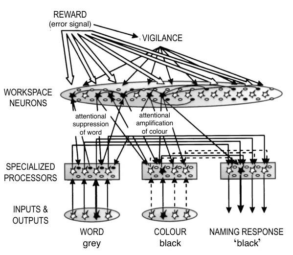

Phần IV · Chương 12 — Bộ não nhận thức
12 Bộ não nhận thức
Chúng ta đã phác thảo nền tảng của các cơ chế thần kinh trong xử lý thông tin, cơ sở của học tập biểu diễn, trí nhớ ngắn hạn trong các hệ thống thần kinh hồi quy động, và học tăng cường làm cơ sở để xây dựng các hệ thống ra quyết định. Những chủ đề này được thảo luận trong cuốn sách như các nguyên lý cơ bản của những cơ chế mà bộ não sử dụng. Trong chương cuối cùng này, chúng ta muốn đưa ra một số ví dụ về các hệ thống đó trong những lý thuyết ở cấp độ nhận thức cao hơn, đồng thời giới thiệu ngắn gọn về mạng nhân quả như một khuôn khổ quan trọng cho các mô hình như vậy. Chúng ta bắt đầu bằng việc phác thảo thị giác phân cấp và có chú ý để đưa ra một ví dụ nhỏ về cách bộ não tích hợp các cơ chế vượt ra ngoài các mô hình nguyên khối như học sâu. Sau đó, chúng ta thảo luận về giả thuyết không gian làm việc nhằm cho thấy bộ não có thể tạo ra các giải pháp mới cho những nhiệm vụ mới trong các kiến trúc mô-đun như thế nào. Cuối cùng, chúng ta phác thảo các mô hình mô tả suy luận nhận thức bằng mạng nhân quả Bayes và cũng đưa ra cái nhìn tổng quan về những hướng đi rộng hơn của học tập nhân quả.
12.1 Thị giác có chú ý
12.1.1 Thị giác có chú ý
VisNet bao gồm các tương tác bên trong mỗi lớp để ổn định tính thưa thớt, mặc dù dòng thông tin giữa các lớp hoàn toàn là truyền thẳng. Bước tiếp theo là xem xét dòng thông tin từ trên xuống trong các mô hình vỏ não. Thông tin từ trên xuống đóng vai trò then chốt trong các quá trình nhận thức. Ví dụ, khi yêu cầu đối tượng tham gia tìm kiếm các mục cụ thể trong một cảnh thị giác, chẳng hạn như đỉnh tháp Eiffel trong ví dụ minh họa ở Hình 12.1. Một cuộc tìm kiếm thị giác như vậy đòi hỏi ảnh hưởng từ trên xuống của một thiên lệch đối tượng nhằm chỉ rõ cần tìm kiếm thứ gì. Ngược lại, chúng ta có thể yêu cầu đối tượng nhận dạng một vật thể tại một vị trí cụ thể, chẳng hạn như nhận dạng vật thể ở góc dưới bên phải của bức ảnh trong Hình 12.1. Điều này đòi hỏi sự chú ý không gian. Gustavo Deco và các cộng sự đã phát triển một mô hình có thể làm sáng tỏ các quá trình liên quan đến tìm kiếm thị giác và nhận dạng đối tượng. Sơ đồ tổng thể của mô hình được phác thảo trong Hình 12.2. Mô hình về cơ bản có ba phần quan trọng: một phần được gắn nhãn ‘V1–V4’, một phần được gắn nhãn ‘IT’, và một phần được gắn nhãn ‘PP’. Chúng ta sẽ phác thảo riêng kiến trúc và vai trò cụ thể của các phần này sau đây. Tuy nhiên, ngay từ đầu cần ghi nhớ rằng các phần khác nhau không hoạt động cô lập. Ở đây chúng ta đặc biệt quan tâm đến cách các phần khác nhau tác động lẫn nhau.
Đầu vào từ dưới lên cho mô hình đến từ các cảnh thị giác. Trong mô hình, điều này được mô phỏng bằng cách lấy các ảnh đầu vào và phân tách chúng bằng các hàm Gabor. Điều này tương ứng với các biểu diễn ở thể gối ngoài (LGN) vì các đường cong điều chỉnh trong LGN có thể được tham số hóa bằng các hàm Gabor. Các giai đoạn đầu của xử lý vỏ não được biểu diễn bằng một mô-đun gắn nhãn ‘V1–V4’ trong mô hình. Trong bản triển khai mô hình cụ thể được thảo luận ở đây, đây chỉ là một lớp duy nhất. Tuy nhiên, việc triển khai phân cấp
Fundamentals of Computational Neuroscience. Third edition. Thomas P. Trappenberg, Oxford University Press. © Oxford University Press 2023. DOI:10.1093/oso/9780192869364.003.0012

Ở ĐÂU (WHERE)
Ở ĐÂU (WHERE)
Cho trước :
Cho trước :
Cho trước :
Cho trước :
Các đặc trưng cụ thể
Các đặc trưng cụ thể
Vị trí không gian cụ thể
Vị trí không gian cụ thể
( Đối tượng mục tiêu )
( đối tượng mục tiêu )
( Vị trí mục tiêu)
( vị trí mục tiêu)
Chức năng :
Chức năng :
Chức năng :
Chức năng :
Quét ( Cửa sổ chú ý quét
Quét ( cửa sổ chú ý quét
Gắn kết ( Cửa sổ chú ý gắn kết các đặc trưng để nhận dạng )
Gắn kết ( cửa sổ chú ý gắn kết các đặc trưng
Toàn bộ cảnh )
toàn bộ cảnh )
để nhận dạng )
CÁI GÌ (WHAT)
CÁI GÌ (WHAT)
Nhận dạng đối tượng
Nhận dạng đối tượng
Hình 12.1 Minh họa nhiệm vụ tìm kiếm thị giác và nhiệm vụ nhận dạng đối tượng. Mỗi nhiệm vụ đòi hỏi một chiến lược khác nhau trong việc khám phá cảnh thị giác [hình do Gustavo Deco cung cấp].
của mô hình này cũng đã được thực hiện nhưng không thiết yếu cho phần thảo luận sau đây. Vai trò chính của phần này trong mô hình là phân tách cảnh thị giác thành các đặc trưng. Điều này được biết là xảy ra ở giai đoạn đầu của quá trình xử lý thị giác ở linh trưởng. Ví dụ, các nơ-ron V1 chủ yếu phản hồi với các đặc trưng đơn giản như hướng của cạnh, và các vùng sau đó thường chuyên biệt để biểu diễn các đặc trưng khác như màu sắc, chuyển động, hoặc sự kết hợp của các đặc trưng cơ bản.
Dưới góc độ mô hình hóa, không nhất thiết phải tái tạo chính xác mọi chi tiết của biểu diễn trường thị giác trong não, vì chúng ta chủ yếu quan tâm đến các khía cạnh khác của xử lý thị giác. Ở đây chỉ quan trọng rằng biểu diễn đặc trưng trong phần này của mô hình có tính chất địa hình (topographic), theo nghĩa các đặc trưng được biểu diễn trong các phân vùng (được hiển thị dưới dạng các ô trong mô-đun ‘V1–V4’) tương ứng với vị trí của đối tượng trong trường thị giác, như đã thảo luận ở Mục 1.2.6. Mỗi phân vùng biểu diễn một đặc trưng của một phần trường thị giác dưới dạng một vectơ hoạt độ nút. Không có sự cạnh tranh toàn cục giữa các mô-đun; chỉ bên trong mỗi phân vùng mới có một nhóm ức chế giữ cho tính thưa thớt của hoạt độ trong mỗi phân vùng xấp xỉ không đổi như đã thảo luận ở Mục 8.5.1.
Biểu diễn của trường thị giác, sau khi được phân tách ở ‘V1–V4’, đi vào mô-đun gắn nhãn ‘IT’ trong mô hình. Phần này nhằm mô hình hóa các quá trình trong vỏ não thái dương dưới (inferior-temporal cortex), vốn được biết là tham gia vào nhận dạng đối tượng. Quá trình nhận dạng này được mô hình hóa như một bộ nhớ liên kết như đã phác thảo trong Chương 9. Các điểm hút (point attractors) của những đối tượng cụ thể sau đó được hình thành thông qua các kết nối nhánh bên được huấn luyện theo Hebb bên trong cấu trúc này. Các kết nối giữa ‘V1–V4’ và ‘IT’ cũng có thể được huấn luyện bằng học Hebb. Bằng cách lần lượt đặt một đối tượng tại tất cả các vị trí trong trường thị giác được bao phủ bởi các phân vùng ở ‘V1–V4’, các trọng số giữa các phân vùng trong ‘V1–V4’ và các nút trong ‘IT’ về cơ bản là giống nhau đối với mọi phân vùng. Điều này cho phép mạng điểm hút ‘nhận dạng’ các đối tượng đã được huấn luyện trong các lượt thử nghiệm tại mọi vị trí trong trường thị giác, qua đó mô phỏng khả năng nhận dạng đối tượng bất biến theo phép tịnh tiến. Tuy nhiên, mạng hút cũng đóng góp vào tính bất biến theo phép tịnh tiến
Ức chế
IT ( Nhận dạng đối tượng )
Nhóm
PP Vị trí không gian
„ “
Cái gì
( )
Vị trí chú ý ưu tiên
„ “
Ở đâu
Ức chế
nhóm
V1 V4 (Trích xuất đặc trưng )
....
Ức chế
nhóm ....
Ức chế
Bộ lọc Gabor
nhóm
LGN
Trường thị giác
Hình 12.2 Phác thảo một mô hình xử lý thị giác ở linh trưởng nhằm mô phỏng tìm kiếm thị giác và nhận dạng đối tượng. Các phần chính của mô hình được lấy cảm hứng từ các đặc điểm cấu trúc của những vùng vỏ não được cho là trung tâm trong các quá trình này. Chúng bao gồm các vùng thị giác sớm (gắn nhãn ‘V1–V4’) biểu diễn nội dung trường thị giác một cách địa hình với các đặc trưng cơ bản, vỏ não thái dương dưới (gắn nhãn ‘IT’) được biết là đóng vai trò trung tâm trong nhận dạng đối tượng, và vỏ não đỉnh sau (gắn nhãn ‘PP’) gắn liền chặt chẽ với sự chú ý không gian [hình do Gustavo Deco cung cấp].
của quá trình nhận dạng đối tượng vì mạng hút trong ‘IT’ hoàn thiện một mẫu đầu vào từ ‘V1–V4’ ngay cả khi tập trọng số giữa một phân vùng trong ‘V1–V4’ và các nút trong ‘IT’ yếu hơn các phân vùng khác.
Sự đóng góp của mạng hút trong ‘IT’ đối với nhận dạng đối tượng bất biến theo phép tịnh tiến giải thích một số phát hiện thực nghiệm gần đây cho thấy kích thước trường tiếp nhận của các nơ-ron thái dương dưới phụ thuộc vào nội dung của trường thị giác và các đặc điểm cụ thể của nhiệm vụ. Ví dụ, nếu một đối tượng đơn lẻ được hiển thị trên màn hình với nền trống, người ta thấy rằng trường tiếp nhận của một nơ-ron phản hồi với đối tượng này có thể rất lớn (lên tới 30 độ hoặc hơn). Một ví dụ về tốc độ phát xung của một nơ-ron thái dương dưới ở linh trưởng không phải người đang thực hiện nhiệm vụ tìm kiếm thị giác được thể hiện bằng đường liền nét trong Hình 12.3A. Điều thú vị là nếu hai đối tượng được trình bày đồng thời, hoặc nếu đối tượng mục tiêu được hiển thị trên một nền phức tạp (có thể xem như một cảnh có nhiều đối tượng), thì kích thước của trường tiếp nhận co lại rõ rệt (xem đường nét đứt trong Hình 12.3A cho trường hợp đối tượng trên nền phức tạp).
Một lời giải thích khả dĩ cho các phát hiện thực nghiệm được đưa ra bởi mô hình thảo luận trong mục này, vốn dựa trên động lực học hút của mạng tự liên kết trong ‘IT’. Nếu chỉ có một đối tượng được hiển thị, đối tượng đó sẽ kích hoạt đúng điểm hút và do đó gợi nhớ lại đối tượng bất kể vị trí của nó, điều này tương ứng với các trường tiếp nhận lớn. Tuy nhiên, nếu hai hoặc nhiều đối tượng đã huấn luyện được hiển thị, thì trạng thái cuối cùng của mạng hút có khả năng bị chi phối chủ yếu bởi đối tượng gần hố mắt (fovea) nhất, đối tượng nhận được trọng số lớn nhất do sự phóng đại vỏ não.
A. Kết quả ghi nhận nơ-ron B. Kết quả mô phỏng mô hình
130
Nền trống
1
120
Nền trống
Tốc độ phát xung trung bình
110
0.8
Tương quan
100
0.6
90
80
Nền tự nhiên
0.4
70
Nền tự nhiên
0.2
60
50
0 10 20 30 40 50 60 0
0 10 20 30 40 50 60
Khoảng cách từ điểm nhìn đến đối tượng mục tiêu
Khoảng cách từ điểm nhìn đến đối tượng mục tiêu
Hình 12.3 (A) Ví dụ về tốc độ phát xung trung bình từ các bản ghi của một nơ-ron trong vỏ não thái dương dưới của khỉ khi đáp ứng với một kích thích hiệu quả nằm ở các góc độ khác nhau cách xa hướng nhìn [dữ liệu thực nghiệm do Edmund Rolls cung cấp]. (B) Kết quả mô phỏng của một mô hình với các thành phần thiết yếu của mô hình trong Hình 12.2. Theo đó, độ tương quan là thước đo mức độ trùng khớp giữa hoạt độ của các nút ‘IT’ với biểu diễn của đối tượng mục tiêu đã được sử dụng trong quá trình huấn luyện [phỏng theo Trappenberg, Rolls, and Stringer, Advances in Neural Processing Systems 14, 2002, ].
Kết quả mô phỏng, được trình bày trong Hình 12.3B, xác nhận giả thuyết này.
12.1.2 Thiên lệch chú ý trong tìm kiếm thị giác và nhận dạng đối tượng
Tìm kiếm thị giác có thể được mô phỏng trong mô hình ở Hình 12.2 bằng cách cung cấp một đầu vào thiên lệch đối tượng cho mạng hút trong ‘IT’ nhằm báo cho hệ thống biết cần tìm thứ gì. Thông tin từ trên xuống như vậy được cho là bắt nguồn từ các vùng trán của não. Các mô phỏng đã chỉ ra rằng đầu vào bổ sung của một thiên lệch đối tượng tới ‘IT’ có thể tăng tốc quá trình nhận dạng trong ‘IT’. Thiên lệch đối tượng cũng hỗ trợ khả năng nhận dạng đối với đầu vào từ ‘V1–V4’ tương ứng với đối tượng mục tiêu trong tìm kiếm thị giác. Tương ứng, người ta thấy trong cả mô phỏng lẫn các thí nghiệm trên linh trưởng rằng trường tiếp nhận của các đối tượng mục tiêu lớn hơn trường tiếp nhận của các đối tượng không phải mục tiêu.
Những kết luận song song có thể được rút ra trong một nhiệm vụ nhận dạng đối tượng, trong đó đầu vào từ trên xuống được đưa vào một vị trí cụ thể trong mô-đun ‘PP’. Nhãn của mô-đun này gợi ý quá trình xử lý ở vỏ não đỉnh sau, vốn là một phần của con đường xử lý thị giác lưng (con đường ‘ở đâu’), và do đó được thích nghi đặc biệt cho các biểu diễn không gian. Phần này được mô hình hóa bằng một tấm thần kinh tổ chức theo không gian, được kết nối với phân vùng tương ứng trong ‘V1–V4’. Hoạt độ này ở ‘PP’ do đó có thể tăng cường hoạt độ thần kinh ở ‘V1–V4’ đối với các đặc trưng của đối tượng nằm tại vị trí tương ứng trong trường thị giác. Hệ quả là mạng ‘IT’ sẽ dễ dàng (nhanh chóng) hơn trong việc hoàn thiện các mẫu đầu vào cho đối tượng, và từ đó ‘nhận dạng’ đối tượng tại vị trí tương ứng.
Các thiên lệch chú ý có nguồn gốc khác nhau trong mô hình ở Hình 12.2. Thiên lệch chú ý được sử dụng trong tìm kiếm thị giác bắt nguồn từ đầu vào từ trên xuống tới ‘IT’ và dựa trên đối tượng. Thiên lệch chú ý trong nhiệm vụ nhận dạng đối tượng tác động lên ‘PP’ và dựa trên vị trí. Tuy nhiên, có thể khó tách biệt các dạng chú ý khác nhau trong thực nghiệm vì mọi phần của mô hình đều có tính hai chiều, phù hợp với các phát hiện giải phẫu. Ví dụ, một thiên lệch đối tượng tới ‘IT’ trong nhiệm vụ tìm kiếm thị giác cuối cùng sẽ kích hoạt một số hoạt độ ở ‘PP’ tương ứng với vị trí nơi đối tượng đang ở, và bản thân hoạt độ này sẽ hỗ trợ quá trình nhận dạng đối tượng đó.
Thời gian trôi qua cho đến khi hoạt độ của một nút trong ‘PP’ đạt đến một ngưỡng nhất định có thể được coi là dấu hiệu chỉ báo thời gian phản ứng cần thiết để tìm ra một đối tượng cụ thể trong tìm kiếm thị giác. Deco và cộng sự đã mô phỏng một nhiệm vụ tìm kiếm thị giác trong đó cảnh thị giác
A. Tìm kiếm song song B. Tìm kiếm tuần tự
X
F F
F F
E X
E
E
Số lượng mục
Số lượng mục
1 2 3
1 2 3
2 3
Hoạt độ
Hoạt độ
PP
PP
Thời gian
Thời gian
Hình 12.4 Các thí nghiệm số trong đó mô hình mô phỏng một nhiệm vụ tìm kiếm thị giác đối với một đối tượng mục tiêu (chữ ‘E’) trong một cảnh thị giác có các yếu tố gây nhiễu thị giác. (A) Trong một thí nghiệm, các yếu tố gây nhiễu gồm các chữ ‘X’, vốn rất khác biệt về mặt thị giác so với chữ mục tiêu. Hoạt độ của một nút ‘PP’ tương ứng với vị trí mục tiêu tăng lên trong các thí nghiệm này độc lập với số lượng yếu tố gây nhiễu, hàm ý tìm kiếm song song. (B) Thí nghiệm thứ hai được thực hiện với các yếu tố gây nhiễu (chữ ‘F’) tương đồng về mặt thị giác với chữ mục tiêu. Thời gian phản ứng, đo từ các nút ‘PP’, phụ thuộc tuyến tính vào số lượng đối tượng, một đặc điểm cũng đặc trưng cho tìm kiếm tuần tự. Tuy nhiên, cả hai chế độ đều hiện diện trong cùng một ‘kiến trúc song song’ [phỏng theo Gustavo Deco, trao đổi cá nhân].
có một mục tiêu (chữ ‘E’) và một số yếu tố gây nhiễu. Các yếu tố gây nhiễu (chữ ‘X’) trong một thí nghiệm rất khác về mặt thị giác so với mẫu mục tiêu. Thời gian phản ứng mô phỏng trong trường hợp này độc lập với số lượng đối tượng trong cảnh thị giác như chỉ ra trong Hình 12.4A. Ngược lại, thời gian phản ứng tăng tuyến tính theo số lượng yếu tố gây nhiễu khi các đối tượng gây nhiễu (chữ ‘F’) tương đồng về mặt thị giác với mục tiêu (xem Hình 12.4B). Sự gia tăng tuyến tính của thời gian phản ứng theo số lượng đối tượng trong cảnh thị giác thường được gán cho một cơ chế tìm kiếm tuần tự, trái ngược với việc không phụ thuộc của thời gian phản ứng vào số lượng đối tượng vốn chỉ ra tìm kiếm song song.
Những phát hiện tương tự trong các thí nghiệm tâm vật lý ở người thường được diễn giải là bằng chứng cho các chiến lược tìm kiếm khác nhau được cho là thực hiện bởi các cơ chế thần kinh khác nhau. Tuy nhiên, kết quả mô phỏng chứng minh rằng những kết quả tâm vật lý như vậy nhất quán với một bộ máy thần kinh song song duy nhất, và kiểu tìm kiếm tuần tự bề ngoài chỉ là do nhu cầu giải quyết xung đột gay gắt hơn trong quá trình nhận dạng. Mô hình có thể đưa ra nhiều dự đoán hơn nữa có thể kiểm chứng bằng thực nghiệm, ở mức độ hành vi, bằng các kỹ thuật chẩn đoán hình ảnh não hoặc bằng ghi nhận tế bào. Do đó, mô hình này là một ví dụ tốt về loại mô hình mà chúng ta hy vọng sẽ xuất hiện cho nhiều quá trình não bộ khác.
12.2 Giả thuyết không gian làm việc liên kết
Ngày càng rõ ràng rằng các nhiệm vụ nhận thức phức tạp chỉ có thể được giải quyết nhờ sự hợp tác linh hoạt của nhiều mô-đun chuyên biệt. Trái ngược với hầu hết các mô hình chức năng não hiện có, thật vô cùng hấp dẫn khi quan sát con người chúng ta linh hoạt đến mức nào trong việc đối phó với thế giới phức tạp xung quanh. Trái ngược với phần lớn các mô hình tạo ra hành vi rất rập khuôn, con người thể hiện khả năng làm chủ các chức năng đòi hỏi kỹ năng cao trong khi vẫn duy trì khả năng tạo ra các giải pháp mới chưa từng được huấn luyện chuyên sâu. Ví dụ, chúng ta có thể lái xe hơi dễ dàng đến mức dường như cần rất ít sự chú ý và nỗ lực để làm điều đó. Điều này bất chấp thực tế rằng chúng ta phải phản ứng với môi trường chưa biết, chẳng hạn như đi theo một con đường mà chúng ta chưa từng lái xe qua trước đây. Tuy nhiên, khi những tình huống rất mới và mang tính quyết định xảy ra, chúng ta có thể huy động bản thân với nhiều nguồn lực dành cho vấn đề này, điều thường đi kèm với hoạt động tinh thần rất tập trung và đôi khi rất gian nan.
12.2.1 Không gian làm việc toàn cục
Từ góc độ cấp hệ thống, chúng ta kỳ vọng các bộ xử lý chuyên biệt có thể có mức độ tự chủ cao trong khi vẫn có thể tham gia, khi cần thiết, vào các hoạt động hệ thống mang tính toàn cục hơn. Tuy nhiên, phần lớn vẫn chưa rõ làm thế nào sự linh hoạt như vậy có thể đạt được một cách bền vững. Trong phần còn lại của chương này, chúng ta sẽ xem xét một ý tưởng mang tính suy đoán nhưng có tầm ảnh hưởng sâu rộng về cách điều này có thể đạt được trong não, được đề xuất bởi Stanislas Dehaene, Michel Kerzberg và Jean-Piere Changeux. Trong Hình 12.5, chúng tôi đã tái hiện minh họa của họ về ý tưởng chính đằng sau đề xuất này. Trong đó, các tác giả chia các chức năng não thành năm hệ thống con cơ bản, trải dài từ hệ thống tri giác, vốn là cửa sổ của chúng ta hướng ra thế giới, đến hệ thống vận động chịu trách nhiệm thực thi các mục tiêu mong muốn. Ba hệ thống con còn lại là hệ thống trí nhớ, hệ thống đánh giá và hệ thống chú ý, tất cả đều là những thành phần cơ bản cho các nhiệm vụ nhận thức phức tạp theo quan điểm của nhiều nhà khoa học nhận thức. Điểm chính mà Dehaene và các cộng sự đưa ra là các hệ thống con này phải có khả năng hoạt động độc lập hoặc kết hợp với nhau một cách linh hoạt, và họ suy đoán rằng điều này có thể đạt được thông qua một dạng mạng lưới nào đó giữa các hệ thống con. Một mạng lưới liên kết như vậy sẽ tạo thành một không gian làm việc toàn cục (global workspace), vốn là nền tảng cho khả năng giải quyết các nhiệm vụ phức tạp một cách linh hoạt của chúng ta.
Trái ngược với các mạng xử lý cơ bản mang tính cục bộ hơn tạo nên năm hệ thống con cơ bản như minh họa trong Hình 12.5, không gian làm việc phải là một không gian tính toán mang tính toàn cục hơn trong não. Các đường chiếu giữa các vùng vỏ não thực sự rất dồi dào, và các sợi liên kết của những kết nối vỏ não – vỏ não bắt nguồn chủ yếu từ các nơ-ron tháp ở lớp II và lớp III, như đã đề cập ở Chương 1. Các tác giả gợi ý rằng một phần lớn của không gian làm việc toàn cục do đó có thể định vị bên trong các lớp này. Gợi ý này kéo theo những hệ quả thú vị cho việc diễn giải các phát hiện giải phẫu liên quan đến các lớp đó. Chúng ta đã đề cập rằng mức độ phát triển của các lớp bên trong vỏ não thay đổi đáng kể. Chẳng hạn, lớp II và lớp III được nâng cao (GIÁ TRỊ)
Chú ý
Dài hạn
hệ thống (Tập trung)
trí nhớ (QUÁ KHỨ)
Không gian làm việc toàn cục
Hệ thống vận động (TƯƠNG LAI)
Hệ thống tri giác (HIỆN TẠI)
Hình 12.5 Minh họa giả thuyết không gian làm việc. Có thể phân biệt hai không gian tính toán: các mạng con với chuyên môn hóa tính toán cục bộ và đặc thù, và một mạng lưới liên kết đóng vai trò nền tảng của không gian làm việc toàn cục [phỏng theo Dehaene, Kerszberg, and Changeux, Proceedings of the National Academy of Science 95: 14529–34 (1998)].
ở vỏ não trước trán lưng bên, một vùng đã được chứng minh có liên quan đến nhiều loại xử lý tinh thần phức tạp. Ví dụ, vùng này được thấy trở nên hoạt động trong các giai đoạn đầu của việc học một chuỗi số, và bệnh nhân bị tổn thương ở vùng này được cho là gặp khó khăn khi chuyển đổi giữa các quy tắc khác nhau trong các nhiệm vụ phân loại đầy thách thức hơn. Rất khó để ghi nhận hoạt động não từ các lớp cụ thể, và do đó việc kiểm chứng trực tiếp mô hình thảo luận dưới đây gặp nhiều thách thức. Trong những tình huống như vậy, cần thiết phải xây dựng các dự đoán khác có thể kiểm chứng được bằng thực nghiệm.
12.2.2 Minh họa không gian làm việc toàn cục trong nhiệm vụ Stroop
Dehaene và các cộng sự đã minh họa ý tưởng chính một cách chi tiết hơn nhiều bằng một mô hình giúp làm sáng tỏ quá trình xử lý trong nhiệm vụ Stroop khi tuân theo giả thuyết không gian làm việc toàn cục. Nhiệm vụ Stroop được minh họa trong Hình 12.6. Ở dạng phổ biến, nó bao gồm một tập các từ chỉ tên màu sắc, trong đó mỗi từ có thể được in bằng một màu khác. Trong nhiệm vụ Stroop, đối tượng được yêu cầu hoặc đọc từ đó hoặc gọi tên màu mà từ được viết (tất cả đều tương đối nhanh). Chúng ta được rèn luyện rất thuần thục trong việc đọc, nên việc hiển thị một từ không gây ra bất kỳ trở ngại nào khi phát âm từ đó. Tuy nhiên, việc gọi tên màu ban đầu có thể gây ra một số khó khăn vì hình ảnh của từ thúc đẩy chúng ta đọc từ thay vì phớt lờ nội dung và báo cáo màu của các chữ cái. Ban đầu phải mất một chút nỗ lực để ức chế việc đọc từ cho đến khi chúng ta tự động hóa phản hồi sau vài lượt thử. Lời giải thích mà Dehaene và các cộng sự đưa ra là không gian làm việc toàn cục phải trở nên hoạt động để ‘nối dây lại’ cấu hình gọi tên từ vốn thường xuyên hoạt động của bộ não.
Để minh họa ý tưởng này sâu hơn, các tác giả đã phát triển một mô hình có thể kiểm thử nhiệm vụ đọc tên từ gọi tên màu hình ảnh xám xám đen đen xám đen
Hình 12.6 Trong nhiệm vụ Stroop, một từ chỉ màu sắc, được viết bằng một màu có thể khác với nghĩa của từ đó, được hiển thị cho đối tượng và yêu cầu thực hiện nhiệm vụ đọc tên từ hoặc gọi tên màu.
trên nhiệm vụ Stroop. Điều này được minh họa trong Hình 12.7. Mô hình bao gồm ba bộ xử lý chuyên biệt: một bộ chỉ báo nghĩa của từ được hiển thị, một bộ chỉ báo màu sắc của từ được hiển thị, và một bộ chỉ báo phản hồi của hệ thống. Trong nhiệm vụ đọc từ chuẩn hơn, chúng ta có thể giả định có một sự ghép nối chặt chẽ giữa bộ xử lý đầu vào thứ nhất và bộ xử lý phản hồi để hệ thống ban đầu có thể dễ dàng báo cáo nội dung của từ. Nhiệm vụ thứ hai, tức là gọi tên màu mà từ được viết, sau đó đòi hỏi sự ức chế các kết nối này và tăng cường các kết nối giữa bộ xử lý đầu vào ‘màu sắc’ và bộ xử lý phản hồi. Điều này đạt được nhờ ảnh hưởng từ trên xuống của các nút không gian làm việc lên các nút trong các bộ xử lý chuyên biệt.

PHẦN THƯỞNG (tín hiệu lỗi)
SỰ CẢNH GIÁC
KHÔNG GIAN LÀM VIỆC
NƠ-RON
khuếch đại chú ý ức chế chú ý đối với màu sắc của từ
BỘ XỬ LÝ CHUYÊN BIỆT
ĐẦU VÀO & ĐẦU RA
TỪ
MÀU SẮC
PHẢN HỒI ĐỌC TÊN
xám đen đen
Hình 12.7 Mô hình không gian làm việc toàn cục có khả năng tái tạo nhiều phát hiện thực nghiệm trong nhiệm vụ Stoop [phỏng theo Dehaene, Kerszberg, and Changeux, Proceedings of the National Academy of Sceince 95:14529–34 (1998)].
Điều gì thúc đẩy các nơ-ron không gian làm việc trở nên hoạt động hoặc thay đổi hành vi của chúng ngay từ đầu? Về cơ bản, hệ thống phải được cho biết cần làm gì. Điều này đạt được dưới dạng một tín hiệu phần thưởng chỉ báo sự sai lệch giữa phản hồi mong muốn và phản hồi thực tế của hệ thống. Tín hiệu lỗi lớn sau đó kích hoạt tham số cảnh giác (vigilance) tăng lên, từ đó cho phép các nơ-ron không gian làm việc trở nên hoạt động để tái cấu hình hệ thống một cách hiệu quả nhằm cho phép phản hồi đúng trong nhiệm vụ yêu cầu. Tham số cảnh giác giảm xuống một khi hệ thống phản hồi đúng. Các tác giả lập luận rằng sự gia tăng cảnh giác (và do đó là sự gia tăng hoạt độ của các nút không gian làm việc) có thể song hành với nỗ lực tinh thần tăng lên mà các đối tượng cảm nhận được trong giai đoạn đầu sau khi chuyển đổi nhiệm vụ.
Mô hình đưa ra một số dự đoán, chẳng hạn như sự gia tăng hoạt độ trong mạng không gian làm việc ở các nhiệm vụ mới, có thể kiểm chứng được bằng thực nghiệm. Mô hình chứng minh một sự linh hoạt thú vị trong việc giải quyết các nhiệm vụ khác nhau, và chúng ta có thể hình dung cách sự linh hoạt trong việc ghép nối các hệ thống con chuyên biệt trong não có thể chịu trách nhiệm cho khả năng thích ứng của chúng ta với môi trường luôn thay đổi mà chúng ta đang sống.
12.3 Các hệ thống ra quyết định bổ trợ
Chúng ta đã phác thảo học tăng cường trong Chương 11 gắn với các tổ chức cơ bản trong não như tiểu não và hạch nền. Cả hai cấu trúc não này đều đã được công nhận rộng rãi về sự tham gia của chúng vào một dạng điều kiện hóa nào đó. Ở đây chúng ta muốn quay lại chủ đề về các hệ thống ra quyết định như vậy với một phác thảo ngắn gọn về một giả thuyết đang nổi lên về các hệ thống ra quyết định bổ trợ. Chúng ta tập trung vào ví dụ về một hệ thống ra quyết định bổ trợ trong não, mặc dù có những ví dụ khác về các hệ thống bổ trợ trong não chẳng hạn như các hệ thống trí nhớ bổ trợ đã được thảo luận ở Chương 9. Một trường hợp khác thường được nghiên cứu là chuyển động giật mắt (saccadic eye movements) vốn có nhiều con đường để khởi phát chuyển động mắt nhanh.
Khi nói về các hệ thống học tập và ra quyết định, rõ ràng toàn bộ bộ não đều tham gia, và thậm chí chúng ta vừa lập luận trong mục trước rằng bộ não có thể huy động các vùng đa dạng để giải quyết linh hoạt các nhiệm vụ. Rõ ràng một sự tách biệt rạch ròi giữa các hệ thống có khả năng sẽ gặp vấn đề ở một mức độ nào đó. Tuy nhiên, chúng ta muốn quay lại cuộc thảo luận về các hệ thống ra quyết định không mô hình (theo thói quen) và có mô hình (cân nhắc kỹ lưỡng) cùng với một số giả thuyết về các tương quan giải phẫu và cấu trúc hỗ trợ. Điều này không có nghĩa đây là những hệ thống ra quyết định phân biệt được duy nhất trong não; trước đó chúng ta đã đề cập đến sự phân biệt giữa điều kiện hóa kiểu Pavlov (cổ điển) và điều kiện hóa công cụ. Tuy nhiên, trọng tâm của chúng ta hiện nay là thực tế hấp dẫn rằng có những hệ thống bổ trợ trong bộ não của chúng ta và các tương tác của chúng tự thân là một chủ đề thú vị, đồng thời dường như cũng có liên quan trong bối cảnh tâm thần học.
Để ôn lại, các hệ thống học tăng cường không mô hình giống với các quyết định theo thói quen vốn dường như dựa vào việc lưu trữ sẵn (caching) các trải nghiệm trước đó, và chúng ta đã thấy cách học sai biệt thời gian (temporal difference learning) có thể lan truyền những trải nghiệm phần thưởng như vậy đến ký ức về các trạng thái dẫn tới điều đó. Một hệ thống giá trị–hành động như vậy sau đó có thể tức thời và nhanh chóng đưa ra quyết định thậm chí nhanh hơn mức một hệ thống có ý thức có thể lĩnh hội. Hệ thống như vậy thậm chí có thể học các mối liên hệ phần thưởng–hành động rất nhanh với tốc độ học lớn. Tuy nhiên, tốc độ học lớn cũng có nghĩa là các quyết định có thể dao động mạnh trong một môi trường xác suất. Sự đánh đổi giữa các mục tiêu cạnh tranh như vậy tự thân đã rất thú vị. Mặc dù chúng ta chưa biết hoàn toàn cách các tốc độ học như vậy tự thích nghi trong não như thế nào, rõ ràng những lựa chọn khác nhau của sự đánh đổi này có thể làm thay đổi đáng kể hành vi của con người. Dù sao đi nữa, các hệ thống quyết định theo thói quen là phần thiết yếu trong cuộc sống của chúng ta, từ việc có thể lái xe hay vận hành máy móc hiệu quả, đến việc chơi thể thao thành thạo. Đã có nhiều báo cáo về cách thể vân lưng bên (DLS) cho thấy nhiều phản hồi liên quan đến việc ra quyết định theo thói quen. Một phác thảo về các tương quan giải phẫu như vậy của các hệ thống ra quyết định bổ trợ được trình bày trong Hình 12.8.
Hình 12.8 Phác thảo các con đường cho hệ thống ra quyết định theo thói quen và cân nhắc kỹ lưỡng [từ Mehdi Khamassi và Mark Humpries, Frontiers in behavioural neuroscience (2012)].
Tuy nhiên, một nhược điểm đáng kể của các hệ thống theo thói quen như vậy là tính thiếu linh hoạt của chúng khi xử lý các tình huống mới và thời gian cần thiết để đi đến quyết định. Để làm điều này tốt hơn, một mô hình về cấu trúc nhân quả của thế giới trở nên hữu ích. Nếu chúng ta hiểu các thành phần của thế giới cùng với những tác động nhân quả khả dĩ của chúng, thì chúng ta có thể cân nhắc một tình huống mới trước khi đưa ra các quyết định theo thói quen đầy rủi ro vốn có thể không phù hợp trong những hoàn cảnh này. Tất nhiên, việc tạo ra hoặc học một mô hình nhân quả của thế giới như vậy là một bài toán hoàn toàn khác. Phần lớn cuốn sách này đã nói về các thành phần cơ chế của một hệ thống như vậy chẳng hạn như học tập biểu diễn, và lát nữa trong chương này chúng ta sẽ đi sâu hơn một chút vào các hệ thống nhận thức trừu tượng hơn và các câu hỏi về học tập nhân quả. Trong Chương 11, chúng ta đã thấy một ví dụ nơi chúng ta biết về thế giới bằng cách biết mọi giá trị và mọi chuyển tiếp khả dĩ trong thế giới và thấy cách điều này có thể được sử dụng về mặt thuật toán. Rõ ràng điều này hữu ích để xây dựng các hệ thống ra quyết định cân nhắc kỹ lưỡng từ một mô hình thế giới nhân quả.
Linh trưởng dường như có cả hai hệ thống ra quyết định này. Một bằng chứng rõ ràng về các hệ thống theo thói quen là khối lượng lớn các thí nghiệm với điều kiện hóa công cụ trong tài liệu học tập ở động vật. Mặt khác, thật dễ dàng để chúng ta tự chứng thực rằng con người có thể đưa ra các quyết định cân nhắc kỹ lưỡng. Cũng có bằng chứng ở các động vật không phải linh trưởng về sự cân nhắc. Ví dụ, từ lâu người ta đã nhận thấy rằng loài gặm nhấm đôi khi dừng lại tại các điểm ra quyết định như một ngã rẽ trong mê cung. Điều thú vị là trong những khoảng thời gian dường như nghỉ ngơi này, hồi hải mã cho thấy một mẫu phát xung khác biệt rõ rệt so với trong giai đoạn di chuyển. Chúng ta đã phác thảo trong Chương 9 một lý thuyết về hồi hải mã như một bản đồ nhận thức, bao gồm bản đồ không gian–thời gian với các trường vị trí. Do đó, người ta gợi ý rằng hồi hải mã có thể cung cấp ngữ cảnh khám phá được mô phỏng cần thiết cho việc ra quyết định cân nhắc kỹ lưỡng. Điều này cũng khớp đẹp mắt với quan sát rằng đầu vào từ hồi hải mã đi qua vỏ não trước trán giữa vào thể vân lưng giữa, nơi cùng với vỏ não trán ổ mắt, gắn liền chặt chẽ với hệ thống ra quyết định cân nhắc kỹ lưỡng như minh họa trong Hình 12.8.
Hơn nữa, các lược đồ tác nhân–phê bình (actor-critic) đã được thảo luận trong Chương 11. Hiện ngày càng có nhiều bằng chứng cho thấy các phần cụ thể của thể vân bụng gọi là phần vỏ (shell) và phần lõi (core) ánh xạ rất khớp vào khuôn khổ này. Tất nhiên, sự phức tạp của bộ não và các tương tác bên trong các vùng não bao gồm động lực học của chúng có thể phức tạp hơn những gì được nắm bắt trong Hình 12.8, nhưng việc sàng lọc qua rất nhiều bằng chứng để khám phá các tổ chức và chức năng khả dĩ của não là một phần quan trọng của khoa học thần kinh tính toán.
Dự đoán phần thưởng
lỗi
Theo thói quen
lựa chọn hành động
Bộ phân xử Tín hiệu lỗi Đối tượng điều khiển
Cân nhắc kỹ lưỡng
lập kế hoạch
Dự đoán trạng thái
lỗi
Hình 12.9 Hình này phác thảo một hệ thống đã được triển khai trên một cánh tay robot đơn giản để nghiên cứu sự tương tác giữa hệ thống ra quyết định theo thói quen và cân nhắc kỹ lưỡng. Các con đường có mũi tên chéo đối với các hệ thống ra quyết định cho biết khả năng thích nghi (học tập) của chúng [từ Fard & Trappenberg, Frontiers in neurorobotics (2019)].
Một vấn đề khi có các hệ thống ra quyết định bổ trợ là câu hỏi làm thế nào để điều phối giữa các quyết định của chúng. Khi đó dường như cần thiết phải có một dạng bộ phân xử nào đó như minh họa trong Hình 12.9. Trong đề xuất thể hiện ở hình này, bộ phân xử trao lợi thế cho hệ thống theo thói quen trừ khi hệ thống này cho thấy một độ bất định lớn dưới dạng sai số dự đoán. Trước đây đã có nhận xét rằng độ bất định nên là một yếu tố mạnh mẽ trong việc kích hoạt hệ thống ra quyết định cân nhắc kỹ lưỡng. Một sự kích hoạt như vậy cũng có thể được khởi phát bởi các tín hiệu báo nguy hiểm hoặc bởi các hệ thống chú ý. Một số vùng như vỏ não trước trán và vỏ não vành đai trước đã được liên hệ với một
X
A
R
W
Hình 12.10 Một mạng Bayes với bốn biến ngẫu nhiên (R, mưa; A, áp suất khí quyển; W, bản tin (dự báo) thời tiết; X, các yếu tố nhân quả khác của mưa).
sự tham gia khả dĩ vào quá trình phân xử.
12.4 Suy luận xác suất: mô hình nhân quả và mạng Bayes
12.4.1 Mô hình đồ thị
Phần lớn các thảo luận trong cuốn sách này xoay quanh các cơ chế nền tảng của học tập biểu diễn và xử lý thông tin trong các mạng. Tất nhiên, rốt cuộc chúng ta muốn hiểu những cơ chế này cho phép suy luận nhân quả như thế nào. Các mô hình trừu tượng hơn trong khoa học nhận thức thường bắt đầu từ một biểu diễn ký hiệu cho trước của thế giới và mô hình hóa các quá trình nhận thức ở cấp độ trừu tượng hơn này. Một trong những lĩnh vực có ảnh hưởng nhất và khai sáng nhất theo đó là lĩnh vực suy luận Bayes trong các mô hình nhân quả. Mục này phác thảo một số kiến thức nền tảng trong lĩnh vực này. Các mô hình này thường được biểu diễn bằng các đồ thị chỉ rõ các quan hệ xác suất giữa các khái niệm, và do đó những mô hình đó còn được gọi là mô hình đồ thị (graphical models).
Hãy xét ví dụ về việc dự báo liệu ngày mai trời có mưa hay không. Cụ thể hơn, chúng ta muốn ước lượng xác suất trời mưa khi biết một số quan sát nhất định. Ví dụ, chúng ta có thể đo xu hướng áp suất khí quyển bằng áp kế, hoặc xem bản tin thời tiết trên thời sự buổi tối có dự báo mưa hay không. Vì chúng ta không thể dự đoán giá trị chính xác của các biến này tại bất kỳ thời điểm nào, chúng ta coi các khái niệm này là các biến ngẫu nhiên. Tất nhiên, có nhiều yếu tố ảnh hưởng đến điều kiện thời tiết; áp suất khí quyển là một trong số đó. Ngược lại, mặc dù chúng ta nghĩ (hoặc ít nhất là hy vọng) rằng có mối tương quan cao giữa dự báo thời tiết trên bản tin buổi tối (vốn có xét đến nhiều yếu tố) và xác suất mưa vào ngày hôm sau, dự báo này chắc chắn không phải là nguyên nhân gây ra mưa. Thay vào đó, nó có phần gián tiếp ở chỗ một số nguyên nhân gây mưa ảnh hưởng đến dự báo mưa trên bản tin buổi tối.
Các quan hệ nhân quả của những yếu tố khác nhau trong ví dụ này được minh họa bằng một mô hình đồ thị trong Hình 12.10. Trong các mạng Bayes như vậy, mỗi vòng tròn biểu diễn một biến ngẫu nhiên (R, mưa; A, áp suất khí quyển; W, bản tin (dự báo) thời tiết; X, các yếu tố nhân quả khác của mưa). Các mũi tên giữa chúng biểu diễn các xác suất có điều kiện.
... ...
R(t-1) R(t) R(t+1)
W(t-1)
W(t) W(t+1)
Hình 12.11 Một mô hình Bayes động với một biến ẩn (R) và một biến quan sát được (W). Mỗi biến tuân theo điều kiện Markov bậc nhất. Các mô hình như vậy còn được gọi là mô hình Markov ẩn.
Do đó, hàm mật độ của toàn bộ mô hình có thể được phân tích thành nhân tử nhờ tính độc lập có điều kiện của các nút không có mũi tên nối giữa chúng như sau
P(R, A, X, W) = P(R|A, X)P(W|A, X)P(A)P(X). (12.1)
Biểu thức này ngắn gọn hơn nhiều so với mô hình thống kê chẩn đoán tổng quát mà chúng ta sẽ phải đánh giá nếu không biết các quan hệ nhân quả. Tất nhiên, các phân phối có điều kiện khác nhau cần được ước lượng từ dữ liệu, nhưng một khi đã biết các đại lượng này, người ta có thể trả lời các câu hỏi cụ thể, chẳng hạn như khả năng trời mưa là bao nhiêu khi biết bản tin dự báo thời tiết báo có mưa.
Một biến thể hữu ích của các mô hình nhân quả là mạng Bayes động (DBN), vốn có tính đến các khía cạnh thời gian. Ví dụ, trong mô hình ở Hình 12.11, chúng ta xem xét liệu trời có đang mưa tại điểm đến du lịch yêu thích của chúng ta hay không. Vì không có mặt ở đó, chúng ta chỉ có thể xem kênh thời tiết vốn báo cáo vào ngày hôm đó xem có mưa hay không. Như vậy, chỉ có biến ngẫu nhiên W(t) tại thời điểm t là quan sát được, còn biến ngẫu nhiên R(t) bị ẩn. Thông tin trên kênh thời tiết không hoàn toàn mang tính kết luận, vì bản tin bao phủ một khu vực rộng lớn và có thể không chính xác cho điểm đến du lịch cụ thể của chúng ta. Mô hình có tính đến việc trời có nhiều khả năng mưa hơn nếu ngày hôm trước đã mưa. Các mạng có mẫu kết nối đơn giản như ở Hình 12.11, trong đó các nút độc lập có điều kiện với các nút khác khi biết các nút cha, được gọi là chuỗi Markov. Ngoài ra, chúng ta thường xem xét các mô hình trong đó các quy luật (xác suất có điều kiện) không phụ thuộc vào thời gian (có tính dừng). Các mô hình với những điều kiện này, và với cấu trúc của Hình 12.11 bao gồm một biến ẩn và một biến quan sát được, được gọi là mô hình Markov ẩn (hidden Markov models). Các thuật toán hiệu quả đã được tìm ra để thực hiện suy luận xác suất (suy diễn thống kê), và những mô hình như vậy ngày càng được sử dụng nhiều để mô tả các quá trình tinh thần.
12.4.2 Ví dụ của Pearl
Bên cạnh sự bùng nổ thuần túy về số lượng tham số khi độ phức tạp của mô hình xác suất tăng lên, còn có một lý do khác khiến hàm xác suất đồng thời không hẳn là thứ chúng ta cần biết. Các hàm mật độ đồng thời của nhiều biến mô tả sự cùng xuất hiện của các giá trị cụ thể của các biến ngẫu nhiên, và hàm xác suất đồng thời p(X, Y ) do đó đối xứng theo các đối số của nó, p(X, Y ) = p(Y, X). Điều thực tế hơn trong đời sống là suy luận về các quan hệ nhân quả. Ví dụ, chuông báo cháy phải được kích hoạt bởi một đám cháy, mặc dù có một xác suất nhỏ là chuông sẽ không kêu khi thiết bị bị hỏng. Tuy nhiên, (hy vọng là) khó có khả năng âm thanh của chuông báo cháy sẽ gây ra một đám cháy. Thật hữu ích khi minh họa các quan hệ nhân quả như vậy bằng các đồ thị như
F A
. Trong các mô hình đồ thị như vậy, các nút biểu diễn các biến ngẫu nhiên, và các liên kết giữa chúng biểu diễn các quan hệ nhân quả với xác suất có điều kiện, p(A|F). Vì chúng ta dùng mũi tên trên các liên kết, ở đây chúng ta thảo luận về đồ thị có hướng, và chúng ta cũng giới hạn thảo luận ở các đồ thị không có chu trình, gọi là đồ thị không chu trình. Đồ thị có hướng không chu trình còn được gọi là DAG.
P(E)
P(B)
Trộm đột nhập (Burglary)
Động đất (Earthquake)
.002
.001
B t t f f
E t f t f
P(A|B,E)
.95
Báo động (Alarm)
.94
.29 .001
A t f
P(J|A) A t f
P(M|A)
.90 .05
.70 .01
MaryGọi JohnGọi
Hình 12.12 Ví dụ về mô hình nhân quả.
Các mô hình nhân quả dạng đồ thị được Judea Pearl phát triển mạnh mẽ, và ví dụ sau đây được lấy từ cuốn sách Causality: models, reasoning and inference của ông. Mô hình được trình bày trong Hình 12.12. Mỗi nút trong năm nút đại diện cho một biến ngẫu nhiên nhị phân (Trộm đột nhập B={có,không}, Động đất E={có,không}, Báo động A={có,không}, John gọi J={có,không}, Mary gọi M={có,không}). Hình vẽ cũng bao gồm các bảng xác suất có điều kiện (CPT) quy định các xác suất có điều kiện được biểu diễn bởi các liên kết giữa các nút.
Phân phối đồng thời của năm biến có thể được phân tích thành nhân tử theo nhiều cách tuân theo quy tắc chuỗi (quy tắc Bayes tổng quát) của lý thuyết xác suất, ví dụ như p(B, E, A, J, M) = P(B|E, A, J, M)P(E|A, J, M)P(A|J, M)P(J|M)P(M).
(12.2) Tuy nhiên, mô hình nhân quả biểu diễn một phép phân tích nhân tử cụ thể của các hàm xác suất đồng thời, cụ thể là p(B, E, A, J, M) = P(B)P(E)P(A|B, E)P(J|A)P(M|A), (12.3)
vốn dễ xử lý hơn nhiều. Ví dụ, nếu chúng ta không biết các hàm xác suất có điều kiện, chúng ta cần chạy nhiều thí nghiệm hơn để ước lượng các điều kiện khác nhau (24 + 23 + 22 + 21 + 20 = 31) thay vì số điều kiện đã được thu gọn trong mô hình nhân quả (1 + 1 + 22 + 2 + 2 = 10). Cũng rất dễ sử dụng mô hình nhân quả để thực hiện suy luận (rút ra kết luận) cho các câu hỏi cụ thể. Chẳng hạn, giả sử chúng ta muốn biết xác suất không có động đất hay trộm đột nhập khi chuông báo động kêu và cả John lẫn Mary đều gọi. Xác suất này được cho bởi
P(B = f, E = f, A = t, J = t, M = t) = P(B = f)P(E = f, )P(A = t|B = f, E = f)P(J = t|A = t)P(M = t|A = t) = 0.998 ∗0.999 ∗0.001 ∗0.7 ∗0.9 ≈0.00062.
Mặc dù chúng ta có một mô hình nhân quả trong đó các biến cha ảnh hưởng đến kết quả của các biến con, chúng ta cũng có thể sử dụng bằng chứng từ biến con để suy ra một số giá trị khả dĩ của biến cha. Ví dụ, hãy tính xác suất chuông báo động kêu, khi biết John gọi, P(A = t|J = t). Để làm điều này, trước tiên chúng ta nên tính xác suất chuông báo động kêu vì chúng ta sẽ cần đến nó sau này. Giá trị này được cho bởi
P(A = t) = P(A = t|B = t, E = t)P(B = t)P(E = t) + ...
P(A = t|B = t, E = f)P(B = t)P(E = f) + ... P(A = t|B = f, E = t)P(B = f)P(E = t) + ... P(A = t|B = f, E = f)P(B = f)P(E = f) = 0.95 ∗0.001 ∗0.002 + 0.94 ∗0.001 ∗0.998 + ...
0.29 ∗0.999 ∗0.002 + 0.001 ∗0.999 ∗0.998 = 0.002516442.
Sau đó chúng ta có thể dùng quy tắc Bayes để tính xác suất cần tìm,
P(A = t|J = t) = P(J = t|A = t)P(A = t) P(J = t|A = t)P(A = t) + P(J = t|A = f)P(A = f)
≈ 0.9 ∗0.0025 0.9 ∗0.0025 + 0.05 ∗0.9975 ≈0.0434.
Tương tự, chúng ta có thể áp dụng các quy tắc của lý thuyết xác suất để tính các đại lượng khác, nhưng các phép tính này có thể trở nên cồng kềnh với những đồ thị lớn hơn. Do đó, thật hữu ích khi sử dụng các công cụ số để thực hiện suy luận như vậy. Một bộ công cụ Python cho mạng Bayes được giới thiệu trong mục tiếp theo.
Trong khi suy luận là một ứng dụng quan trọng của các mô hình nhân quả, việc suy ra quan hệ nhân quả từ dữ liệu là một lĩnh vực khác nơi các mô hình nhân quả cách mạng hóa các nghiên cứu khoa học. Nhiều phương pháp truyền thống đánh giá sự cùng xuất hiện của các sự kiện để xác định sự phụ thuộc, chẳng hạn như phân tích tương quan. Tuy nhiên, một phân tích tương quan như vậy thường không phải là chỉ báo tốt cho quan hệ nhân quả. Hãy xem xét ví dụ trong Hình 12.12. Khi chuông báo động kêu, nhiều khả năng John và Mary sẽ gọi, nhưng sự kiện John gọi độc lập lẫn nhau với sự kiện Mary gọi. Tuy vậy, khi John gọi thì về mặt thống kê cũng có nhiều khả năng quan sát thấy sự kiện Mary gọi hơn. Đôi khi chúng ta chỉ quan tâm đến khả năng cùng xuất hiện, khi đó phân tích tương quan có thể là một khởi đầu tốt, nhưng nếu chúng ta quan tâm đến việc mô tả nguyên nhân của các quan sát, thì chúng ta cần một cách tiếp cận khác. Một số thuật toán đã được đề xuất cho học tập cấu trúc, chẳng hạn như thuật toán gọi là suy luận nhân quả (inferred causation - IC), vốn suy diễn ra cấu trúc nhân quả có khả năng cao nhất đằng sau dữ liệu cho trước.
12.4.3 Suy luận xác suất trong Python sử dụng LEA
Có một số công cụ để làm việc với các mô hình xác suất và mô hình đồ thị Bayes. Một bộ công cụ lập trình xác suất tổng quát rất nổi bật là Stan (https://mc-stan.org), nhưng ở đây chúng ta sẽ đưa ra một ví dụ sử dụng LEA3 (https://bitbucket.org/piedenis/lea) vốn là một công cụ đơn giản hơn để làm việc với xác suất rời rạc trong Python. Đặc biệt, LEA có hỗ trợ trực tiếp cho các mô hình Bayes. Mục ngắn gọn này không nhằm mục đích giới thiệu kỹ lưỡng công cụ này mà chỉ đưa ra một ví dụ nhằm minh họa tính hữu ích của những công cụ như vậy. Chúng ta sẽ trình bày một chương trình ví dụ cho bài toán trộm đột nhập/động đất.
Phần chính của chương trình là định nghĩa cấu trúc đồ thị và các bảng xác suất có điều kiện đi kèm. Đoạn mã tương ứng khá dễ tự hiểu.
Listing 12.1 LeaExample.ipynb (part 1) 1 import l e a 2 3 b u r g l a r y = l e a . event ( 0 . 0 0 1 ) 4 earthquake = l e a . event ( 0 . 0 0 2 ) 5 alarm = l e a . j o i n t ( burglary , earthquake ) . switch ({ 6 ( True , True ) : l e a . event ( 0 . 9 5 0 ) , 7 ( True , False ) : l e a . event ( 0 . 9 4 0 ) , 8 ( False , True ) : l e a . event ( 0 . 2 9 0 ) , 9 ( False , False ) : l e a . event ( 0 . 0 0 1 ) }) 10 j o h n C a l l s = alarm . switch ({ True : l e a . event ( 0 . 9 0 ) , 11 False : l e a . event ( 0 . 0 5 ) }) 12 maryCalls = alarm . switch ({ True : l e a . event ( 0 . 7 0 ) , 13 False : l e a . event ( 0 . 0 1 ) })
Ký pháp này bao gồm việc đặc tả các bảng xác suất rời rạc, và nó chứa các quan hệ giữa các biến nên không cần phải đặc tả riêng rẽ đồ thị mạng.
Một khi đồ thị đã được đặc tả, có thể sử dụng một số bộ máy suy luận vốn đóng vai trò trái tim của các công cụ như vậy. Trước đó chúng ta đã thấy việc áp dụng liên tục quy tắc Bayes để khử biến dẫn đến đáp án giải tích cho các truy vấn cụ thể. Những phép tính chính xác như vậy cho việc khử biến có thể được cài đặt sao cho suy luận có thể đạt được bằng các lời gọi hàm đơn giản. Ví dụ, nếu chúng ta muốn biết xác suất Mary gọi khi biết có báo động là bao nhiêu, chúng ta có thể viết trong LEA
Listing 12.2 LeaExample.ipynb (part 2) 1 P ( maryCalls . given ( alarm ) )
Đáp án là 0.7, giá trị này tất nhiên có thể đọc trực tiếp từ bảng xác suất có điều kiện. Một ví dụ ít hiển nhiên hơn là xác suất có báo động khi John gọi,
Listing 12.3 LeaExample.ipynb (part 3) 1 P ( alarm . given ( j o h n C a l l s ) )
kết quả này khôi phục lại mức 4 phần trăm mà chúng ta đã tính bằng giải tích ở mục trước. Một truy vấn nâng cao hơn nữa về xác suất đồng thời là
Listing 12.4 LeaExample.ipynb (part 4) 1 P ( ˜ b u r g l a r y & ˜ earthquake & alarm & j o h n C a l l s & maryCalls )
vốn chỉ là một xác suất nhỏ vào khoảng 0.6 phần trăm.
Mặc dù các phương pháp chính xác cho suy luận Bayes là khả thi, một yếu tố đã biết là các phương pháp này chậm và mở rộng rất kém đối với các mạng Bayes lớn hơn. Do đó có nhiều kỹ thuật suy luận xấp xỉ khác nhau chẳng hạn như lan truyền niềm tin (belief propagation), vốn dựa trên một số thông điệp giữa các nút trong đồ thị và việc cực tiểu hóa tính nhất quán của các mẫu. Tuy nhiên, cuộc thảo luận này vượt ra ngoài phạm vi của cuốn sách này.
12.4.4 Cực đại hóa kỳ vọng (Expectation maximization)
Trong ví dụ trên, chúng ta đã chỉ ra cách thực hiện suy luận xác suất với các mạng biến ngẫu nhiên cho trước. Tất nhiên, điều này đòi hỏi phải biết về các phân phối cùng với các tham số liên quan. Do đó, việc ước lượng tham số phân phối từ dữ liệu là thiết yếu. Trước đây chúng ta đã thảo luận cách các hàm có thể được học, đặc biệt là với học có giám sát như trong Chương 7. Trước khi rời khỏi phần thảo luận mô hình hóa xác suất ở đây, chúng tôi muốn đề cập đến thêm một kỹ thuật thường được sử dụng để khớp các phân phối với dữ liệu theo một cách không giám sát nào đó. Quả thực, chiến lược như vậy đã được sử dụng trong phần thảo luận mã hóa dự đoán ở Chương 7. Ở đây chúng ta giả định rằng dạng tổng quát của một phân phối đã được cho trước, và bài toán còn lại là ước lượng các tham số của các mô hình tương ứng theo cách tự giám sát.
Một kỹ thuật ước lượng tham số được áp dụng rộng rãi trong những tình huống như vậy là cực đại hóa kỳ vọng (expectation maximization - EM). Để giới thiệu ý tưởng đằng sau EM, chúng ta theo dõi một ví dụ về ước lượng mật độ trong một thế giới rất đơn giản. Trong thế giới đơn giản này, dữ liệu được sinh ra với xác suất ngang nhau từ hai phân phối chuẩn (Gaussian), một phân phối có trung bình µ1 = −1 và độ lệch chuẩn σ1 = 2, phân phối kia có trung bình µ2 = 4 và độ lệch chuẩn σ2 = 0.5. Hai phân phối này được minh họa trong Hình 12.13A lần lượt bằng đường nét đứt và đường chấm. Giả sử chúng ta biết rằng thế giới chỉ bao gồm dữ liệu từ hai phân phối chuẩn với xác suất ngang nhau, nhưng chúng ta không biết các hiện thực hóa (tham số) cụ thể của những phân phối này. Tri thức tiền nghiệm về hai phân phối chuẩn mã hóa một giả thuyết cụ thể tạo nên mô hình heuristic này. Trong ví dụ đơn giản này, chúng ta đã chọn các heuristic khớp với hệ thống sinh dữ liệu thực tế (thế giới), tức là chúng ta đã sử dụng tường minh một số hiểu biết về thế giới. Như đã lập luận ở trên, chúng ta có thể coi bộ não là một hệ thống động linh hoạt, mà các tham số của nó có thể được điều chỉnh để khớp với các phân phối của thế giới, và cũng có thể thông qua tiến hóa, hệ thống này đã tiến hóa để tham số hóa các khái niệm phổ biến trong thế giới của chúng ta.
Việc học các tham số của hai phân phối chuẩn sẽ dễ dàng nếu chúng ta tiếp cận được thông tin về việc điểm dữ liệu nào được tạo ra bởi phân phối chuẩn nào, tức là nguyên nhân nào đã tạo ra các ví dụ cụ thể. Thật không may, chúng ta chỉ có thể quan sát dữ liệu mà không có nhãn giáo viên để giám sát quá trình học. Do đó chúng ta chọn một p(x) p(x) p(x)
0.8
0.8
0.8
0.6
0.6
0.6
0.4
0.4
0.4
0.2
0.2
0.2
0
0
0
-10 -5 5 -10 0 x -10 -5 5 -10 0 x -10 -5 5 -10 0 x
Hình 12.13 Ví dụ về thuật toán cực đại hóa kỳ vọng (EM) cho một mô hình thế giới với hai phân phối chuẩn. Các phân phối chuẩn của dữ liệu thế giới (dữ liệu đầu vào) được hiển thị bằng đường nét đứt và đường chấm. (A) Mô hình sinh, hiển thị bằng các đường liền nét có màu, được khởi tạo với các tham số tùy ý. Trong thuật toán EM, dữ liệu đầu vào không nhãn được gắn nhãn bằng một mô hình nhận dạng, mà trong ví dụ này chính là nghịch đảo của mô hình sinh. Dữ liệu đã gắn nhãn này sau đó được dùng để ước lượng tham số cho mô hình sinh. Kết quả học tập được hiển thị ở (B) sau hai vòng lặp, và ở (C) sau bốn vòng lặp.
chiến lược tự giám sát. Theo đó, chúng ta bắt đầu với các giá trị tùy ý của các tham số mô hình và sau đó lặp lại hai bước sau cho đến khi hội tụ:
Bước E (E-step): Chúng ta đưa ra các giả định về nhãn huấn luyện (hoặc xác suất dữ liệu được tạo ra bởi một nguyên nhân cụ thể) từ mô hình hiện tại (bước kỳ vọng); và
Bước M (M-step): sử dụng giả thuyết này để cập nhật các tham số của mô hình nhằm cực đại hóa các quan sát (bước cực đại hóa).
Trong ví dụ ở Hình 12.13A, chúng ta đã sử dụng các giá trị khởi đầu µ1 = 2, µ2 = −2, σ1 = σ2 = 1. Các phân phối này được hiển thị bằng các đường liền nét có màu. Việc so sánh dữ liệu được sinh ra với dữ liệu môi trường tương ứng với kiểm định giả thuyết.
Kết quả của dự đoán ban đầu này chưa thực sự thỏa đáng, nhưng chúng ta có thể sử dụng mô hình sinh để biểu diễn kỳ vọng của mình về dữ liệu. Cụ thể, chúng ta có thể gán mỗi điểm dữ liệu vào lớp tạo ra xác suất lớn hơn trong mô hình thế giới hiện tại. Như vậy, ở đây chúng ta đang sử dụng giả thuyết cụ thể của mình làm mô hình nhận dạng. Trong ví dụ, chúng ta có thể dùng quy tắc Bayes để đảo ngược mô hình sinh thành mô hình nhận dạng như chi tiết trong mô phỏng dưới đây. Nếu phép đảo ngược này không khả thi, chúng ta có thể đưa vào một mô hình nhận dạng (kỳ vọng) riêng biệt, Q, để xấp xỉ nghịch đảo của mô hình sinh. Một mô hình nhận dạng như vậy có thể được học bằng các phương pháp tương tự và xen kẽ với mô hình sinh như chúng ta đã thấy với mã hóa dự đoán.
Tất nhiên, việc nhận dạng bằng mô hình nhận dạng ở giai đoạn đầu học tập không được kỳ vọng là chính xác, nhưng việc ước lượng các tham số mới từ dữ liệu đã nhận dạng trong bước M để cực đại hóa kỳ vọng có thể được kỳ vọng là tốt hơn mô hình với các giá trị tùy ý ban đầu. Mô hình mới sau đó có thể được so sánh lại với dữ liệu và, khi cần thiết, được dùng để sinh ra các kỳ vọng mới mà từ đó mô hình được tinh chỉnh. Quy trình này được gọi là thuật toán cực đại hóa kỳ vọng (EM). Các phân phối sau ba và chín vòng lặp như vậy, trong đó chúng ta chọn các điểm dữ liệu mới ở mỗi vòng lặp, được hiển thị trong Hình 12.13B và C. Chương trình EM.py đã được sử dụng để tạo ra Hình 12.13.
Programs/EM.py 1 # 1d example EM a l g o r i t h m 2 import numpy as np 3 import m a t p l o t l i b . pyplot as p l t 4 5 def ga u ss i a n ( x , mu, var ) : 6 r e t u r n np . exp (−(x−mu)∗∗2/(2∗var ) ) / np . s q r t (2∗np . pi ∗var ) 7 8 x0=np . arange ( −10 ,10 ,0.1) 9 var1 =1; var2 =1; mu1=−2; mu2=2; 10 f o r i t e r a t i o n in range ( 1 0 ) : 11 # p l o t d i s t r i b u t i o n 12 p l t . f i g u r e ( ) 13 p l t . p l o t ( x0 , ga u s s i a n ( x0 , −1 ,4) , ’k−−’ ) 14 p l t . p l o t ( x0 , ga u s s i a n ( x0 , 4 , . 2 5 ) , ’k : ’ ) 15 p l t . p l o t ( x0 , ga u s s i a n ( x0 , mu1 , var1 ) , ’ r ’ ) 16 p l t . p l o t ( x0 , ga u s s i a n ( x0 , mu2 , var2 ) , ’b ’ ) 17 # data 18 x=np . a r r a y ( [ np . random . normal ( −1 ,2 ,50) , np . random . normal ( 4 , 0 . 5 , 5 0 ) ] ) 19 # e x p e c t a t i o n ( r e c o g n i t i o n ) 20 c= ga u s s i a n ( x , mu1 , var1)> g au s s i a n ( x , mu2 , var2 ) 21 # maximization 22 mu1=np . sum ( x [ c >0.5])/ np . sum ( c ) 23 var1=np . sum ( ( x [ c>0.5]−mu1 ) ∗∗2 ) / np . sum ( c ) 24 mu2=np . sum ( x [ c <0.5])/(100 −np . sum ( c ) ) 25 var2=np . sum ( ( x [ c<0.5]−mu2)∗∗2)/(100 −np . sum ( c ) )
Qua đó chúng ta sinh ra dữ liệu ngẫu nhiên mới từ mỗi phân phối trong mỗi vòng lặp. Việc nhận dạng dữ liệu này được thực hiện ở Dòng 16 bằng cách đảo ngược mô hình sinh sử dụng công thức Bayes,
P(c|x; G) = P(x|c; G)P(c; G)
P(x; G) . (12.4)
Trong ví dụ cụ thể này, chúng ta biết rằng dữ liệu được phân phối đều từ mỗi phân phối chuẩn nên phân phối tiền nghiệm trên các nguyên nhân, P(c; G), là 1/2 cho mỗi nguyên nhân. Ngoài ra, phân phối biên của dữ liệu cũng được phân phối đều, nên chúng ta có thể bỏ qua hệ số chuẩn hóa này. Mô hình nhận dạng sử dụng tiêu chuẩn quyết định Bayes, trong đó điểm dữ liệu được gán cho nguyên nhân có phân phối nhận dạng, P(c|x; G), lớn hơn. Sử dụng các nhãn của dữ liệu do mô hình nhận dạng tạo ra, sau đó chúng ta có thể dùng dữ liệu để thu được các ước lượng mới về tham số cho từng phân phối chuẩn.
Chúng ta mới chỉ trình bày một minh họa đơn giản về thuật toán EM. Trong thực tế, chúng ta thường cũng phải ước lượng các xác suất tiền nghiệm, điều này dễ thực hiện khi đếm số điểm dữ liệu trong mỗi lớp từ mô hình nhận dạng. Chúng ta cũng có thể thực hiện các ước lượng tham số tốt hơn, ví dụ bằng cách gắn trọng số cho mỗi giá trị trung bình bằng xác suất mà điểm dữ liệu tương ứng thuộc về lớp đó. Cuối cùng, lưu ý rằng khi kiểm thử hệ thống trong thời gian dài, có thể xảy ra trường hợp một trong các phân phối chi phối mô hình nhận dạng khiến chỉ dữ liệu từ một phân phối được tạo ra. Mô hình của một phân phối chuẩn khi đó sẽ giải thích lấn át (explaining away) dữ liệu từ nguyên nhân kia. Các giải pháp thực tế hơn phải tính đến những yếu tố như vậy.
12.5 Mô hình nhân quả cấu trúc và học tập nhân quả
Trong mục trước, chúng ta đã giới thiệu mạng Bayes vốn đặc tả rất gọn gàng việc suy luận xác suất thông qua các mạng nhân quả. Những mạng đó được người lập mô hình chỉ định bằng cách xác định các thành phần ngữ nghĩa của mạng, và thường là cả các quan hệ nhân quả. Mặc dù các mạng như vậy có thể giải thích rất nhiều hành vi của con người, câu hỏi đặt ra là làm thế nào những mạng đó có thể được hiện thực hóa trong bộ não. Điều này bao gồm học tập nhân quả, vốn tự thân có hai thành phần: học các thực thể ngữ nghĩa, và học các quan hệ nhân quả của chúng. Trong mục cuối cùng này, chúng tôi phác thảo một số hướng nghiên cứu thú vị về biểu diễn nhân quả và học tập nhân quả.
12.5.1 Khái quát hóa ngoài phân phối (Out-of-distribution generalization)
Trước khi trình bày sự hình thức hóa các hệ thống nhân quả, thật hữu ích khi suy ngẫm về lợi ích của việc học tập nhân quả như vậy. Chúng ta đã thấy rằng mạng nơ-ron có thể học từ các ví dụ, và chúng ta đã chỉ ra cách điều này dẫn đến một số dạng khái quát hóa. Ví dụ, chúng ta đã huấn luyện trên một số hình ảnh chữ số viết tay từ dữ liệu MNIST và cho thấy cách các ví dụ mà mạng chưa từng thấy trước đó có thể được phân loại đúng. Tuy nhiên, đây chỉ là một dạng khái quát hóa nơi chúng ta về cơ bản có một tập mẫu từ một phân phối nền tảng. Về mặt kỹ thuật, chúng ta gọi đây là dữ liệu IID, viết tắt của dữ liệu độc lập và có phân phối giống nhau (independent and identically distributed). Sự khái quát hóa nằm bên trong phân phối này.
Một dạng khái quát hóa khó hơn nhiều là khái quát hóa ngoài phân phối (OOD). Đây là những tình huống mà tri thức phải được áp dụng vào các hoàn cảnh mới, hoặc do môi trường thay đổi, hoặc sang các môi trường mới với những đặc điểm phần nào khác biệt. Trọng tâm cho những khả năng như vậy là học về các quá trình có thể áp dụng cho các tình huống khác nhau. Ví dụ, nếu một người học được rằng cái búa có thể dùng để đóng đinh vào gỗ, thì nguyên lý tác dụng lực lên một diện tích cụ thể cũng có thể được dùng để đục một lỗ trên tường. Hoặc việc học về bánh xe trên ô tô và công dụng của chúng cho sự di chuyển giúp nhận ra công dụng của chúng trên tàu hỏa. Suy luận nhân quả như vậy rõ ràng là một thành phần then chốt trong khả năng sống sót trong thế giới của động vật, trong khi hầu hết các phương pháp học máy có khả năng khái quát hóa kiểu này rất hạn chế.
Việc học các biểu diễn có ý nghĩa hoặc ngữ nghĩa theo đó có nhiều khía cạnh. Chúng ta vừa đưa ra ví dụ về việc hiểu bánh xe là gì. Mặc dù đây chỉ là một thành phần của ô tô, chúng ta có thể phân biệt thêm các thành phần phụ như lốp xe hoặc van khi cần thiết. Do đó dường như rất hữu ích khi có các biểu diễn phân cấp. Điều này không chỉ đòi hỏi các thành phần được ghép lại với nhau để tạo thành các đối tượng phức tạp hơn, mà còn cả các cấp độ trừu tượng khác nhau. Ví dụ, chúng ta có thể nói về ô tô nói chung khi quy hoạch hệ thống giao thông trong thành phố, hoặc chúng ta có thể hình dung các ví dụ cụ thể khi đang đi mua ô tô.
Mặc dù chúng ta chủ yếu nói về các yếu tố tĩnh, một khía cạnh quan trọng của xử lý thông tin và đặc biệt là quan hệ nhân quả dường như là thời gian hoặc trình tự các sự kiện xảy ra. Điều này được biết rõ từ thị giác, nơi các bức ảnh tĩnh có thể gây mơ hồ do khả năng bị che khuất của các đối tượng. Những sự mơ hồ như vậy thường có thể được giải quyết từ một chuỗi các góc nhìn. Ngoài ra, việc phân đoạn đối tượng từ chuyển động là một kỹ thuật phổ biến minh họa tầm quan trọng của miền thời gian. Điều này đã được phát triển sâu hơn trong phân tích đặc trưng chậm (slow feature analysis) bởi Laurenz Wiskott. Các mạng Bayes theo thời gian như mô hình Markov ẩn (HMM) cũng rất hữu ích trong nhiều ứng dụng. Việc khai thác thông tin thời gian cho suy luận nhân quả chỉ mới bắt đầu xuất hiện.
12.5.2 Mô hình nhân quả cấu trúc
Mặc dù chúng ta đã giới thiệu nền tảng của mạng Bayes (nhân quả), việc tinh chỉnh thêm khái niệm này một chút là khả thi và hữu ích. Mạng Bayes chỉ định một phép phân tích nhân tử của hàm xác suất đồng thời chẳng hạn như:
p(x, y) = p(x|y)p(x). (12.5)
Việc sử dụng công thức xác suất rất hữu ích để biểu diễn độ bất định, và chúng ta đã lập luận rằng việc biểu diễn bằng đồ thị có hướng mang lại cho chúng ta các mô hình vượt trội. Một hạn chế chung của khuôn khổ xác suất là các phép đo về sự cùng xuất hiện không chỉ rõ quan hệ nhân quả. Do đó, những tinh chỉnh hữu ích cho các mô hình nhân quả như vậy là mô hình nhân quả cấu trúc (SCMs). Trong SCMs, chúng ta tách cấu trúc nhân quả tất định khỏi các thành phần ngẫu nhiên mô tả độ bất định. Trong các mô hình như vậy, các biến Xi theo đó được xác định bởi một hàm tất định của các nút cha, Pai, và một biến ngẫu nhiên Ui mô tả độ bất định,
Xi = f(Pai, Ui). (12.6)
Hàm f theo đó là một hàm tất định, mặc dù sự phụ thuộc vào một số hạng nhiễu khiến bản thân biến kết quả mang tính ngẫu nhiên. Tuy nhiên, việc tách cấu trúc nhân quả tất định khỏi độ bất định giúp đặc tả các quan hệ nhân quả tốt hơn.
Một đồ thị đủ về mặt nhân quả hoàn chỉnh theo đó đòi hỏi tất cả các độ bất định Ui phải độc lập với nhau. Điều này dẫn đến hệ quả là các đơn vị nhân quả của một biến cùng với các nút cha của nó chỉ có tác động cục bộ nếu một số nút cha hoặc độ bất định của các quá trình liên quan thay đổi. Một mạng nhân quả như vậy do đó thường được mô tả là một phép phân tích nhân tử tách rời (disentangled factorization). Việc thăm dò một phép phân tích nhân tử tách rời sau đó có thể được kiểm tra bằng một số can thiệp vốn chỉ nên dẫn đến các thay đổi cục bộ. Dường như việc kiểm định giả thuyết chủ động, ví dụ bằng cách thao tác lên các đối tượng, qua đó có thể giúp học tập quan hệ nhân quả.
12.5.3 Học tập nhân quả và AI giải thích được
Học tập nhân quả là một lĩnh vực mới trong AI và khoa học nhận thức. Cho đến nay, mới chỉ có một số ví dụ được thảo luận trong tài liệu cho các hệ thống mô hình cụ thể. Nhưng tôi muốn kết thúc chương này bằng một bình luận về vấn đề liên quan đến AI giải thích được (explainable AI) hiện đang thường xuyên được thảo luận.
Các mạng nơ-ron nhân tạo thường bị gắn mác là hộp đen ở chỗ thường không có cách dễ dàng nào để giải thích tại sao mạng lại đưa ra các câu trả lời cụ thể. Nguy cơ của cách mô tả này là nó tạo ra ấn tượng rằng chúng ta không biết điều gì đang diễn ra bên trong. Tuy nhiên, hầu hết các mạng nơ-ron đều mang tính tất định và chúng ta có thể nói chính xác điều gì đang diễn ra. Vấn đề đúng hơn là việc tường thuật tri thức này dưới dạng các quy tắc rất cồng kềnh và sẽ liên quan đến rất nhiều quy tắc. Điều đó có nghĩa là chúng ta phải nói rằng ‘... bởi vì nơ-ron này và nơ-ron kia đã phát xung, và sự kết nối là thế này thế kia với độ trễ cụ thể, v.v., đây là lý do tại sao các nơ-ron đầu ra cụ thể này hoạt động’. Dù điều này là khả thi, vấn đề của chúng ta là số lượng quy tắc cần thiết để giải thích những sự kiện đơn giản dường như quá sức chịu đựng.
Tất nhiên, điều này không khác mấy trong các mạng nơ-ron thực. Chúng ta không thể quan sát tất cả các nơ-ron như cách chúng ta làm trong các mô phỏng máy tính về mạng nơ-ron nhân tạo, nhưng ngay cả khi có thể, chúng ta cũng sẽ không hài lòng với những lời giải thích kiểu phát xung của từng nơ-ron cụ thể như vậy. Thay vào đó, chúng ta kỳ vọng con người diễn đạt các lời giải thích. Việc dựa vào các thực thể ngữ nghĩa và quan hệ nhân quả theo đó là điều mà con người sẽ chấp nhận làm lời giải thích. Đây là một ví dụ khác về hệ thống cân nhắc kỹ lưỡng nhân quả biểu diễn một mô hình thế giới.
Chỉ là một suy nghĩ cuối cùng về cuộc thảo luận trước đó về việc ra quyết định không mô hình và có mô hình. Ngay cả trong trường hợp các quyết định rõ ràng đã được đưa ra bởi hệ thống ra quyết định không mô hình, người ta đã ghi nhận cách chúng ta tự bịa ra các câu chuyện giải thích sau khi sự việc đã xảy ra. Khả năng như vậy có thể giúp tích hợp các hệ thống ra quyết định khác nhau thành một hệ thống có ý thức.
12.5.4 Con đường phía trước
Chúng tôi hy vọng tài liệu và các cuộc thảo luận cung cấp đủ nền tảng về khoa học thần kinh tính toán để bạn theo đuổi các vấn đề cụ thể hơn mà bạn quan tâm trong tài liệu nghiên cứu. Ngoài ra, chúng tôi hy vọng đã thuyết phục được bạn rằng các nghiên cứu giải tích và tính toán về bộ não có thể thúc đẩy sự hiểu biết của chúng ta về cách bộ não hoạt động, bằng cách lượng hóa các giả thuyết có thể dẫn đến những dự đoán chính xác hơn, mà đến lượt chúng, có thể được kiểm chứng bằng thực nghiệm. Ngay cả khi bạn tập trung vào các kỹ thuật thực nghiệm, việc kết nối chúng với các nỗ lực định lượng hơn là vô cùng thiết yếu. Đối với những người tập trung vào các kỹ thuật lý thuyết, chúng tôi hy vọng đã làm rõ rằng các nghiên cứu lý thuyết phải bắt nguồn từ tri thức thực nghiệm. Một sự hợp tác chặt chẽ hơn giữa các nhà lý thuyết và các nhà thực nghiệm hiện đang nổi lên, và chúng tôi tin tưởng mạnh mẽ rằng những sự hợp tác như vậy có thể thúc đẩy đáng kể sự hiểu biết của chúng ta về các chức năng của não.
Nhiều khía cạnh của chức năng não vẫn chưa được biết rõ. Vẫn còn rất nhiều câu hỏi vô cùng cơ bản chưa có lời giải đáp, bao gồm nhiều chi tiết về các cơ chế xử lý thông tin của bộ não. Tuy nhiên, cũng đã có những đề xuất khá cụ thể, chẳng hạn như bộ não là một hệ thống trí nhớ dự đoán có thể học một mô hình nhân quả của thế giới. Chúng tôi hy vọng giả thuyết này có thể dẫn đường cho các nghiên cứu thực nghiệm tiếp theo.
Một số vùng não đã được các nhà mô hình hóa nhắm tới, và những tiến bộ lớn trong việc hiểu các vùng này đang được kỳ vọng. Tiểu não là một vùng đầy hứa hẹn nhờ kiến trúc tinh vi của nó, nhưng những giả thuyết mạnh mẽ cũng đã được đưa ra cho hồi hải mã, hạch nền và các vùng khác. Một thách thức hiện tại trong khoa học thần kinh tính toán là sự đa dạng của các mô hình với những mục tiêu khác nhau. Sự đa dạng của các mô hình này là điều tất yếu và đáng mong muốn, vì mỗi mô hình được thiết kế để trả lời các câu hỏi cụ thể, nhưng cũng cần thiết phải chắt lọc tri thức nguyên lý từ những nghiên cứu như vậy, vốn có thể so sánh với các dạng nghiên cứu khác. Sự tiến triển trong hiểu biết của chúng ta về các chức năng não chắc chắn cũng sẽ dẫn đến sự hội tụ nhiều hơn trong các phương pháp tiếp cận mô hình hóa.
Một sự hiểu biết tốt hơn về các quá trình não bộ cuối cùng sẽ dẫn đến việc phát triển các ứng dụng chăm sóc sức khỏe mới như liệu pháp phục hồi chức năng tiên tiến sau tổn thương não. Thực tế, riêng việc nghiên cứu hậu quả của các tổn thương não cụ thể đã là một lĩnh vực ứng dụng quan trọng. Việc nghiên cứu các kỹ thuật phục hồi chức năng tốn rất nhiều công sức với bệnh nhân, và các nghiên cứu mô hình hóa có thể cung cấp những khảo sát linh hoạt và tiết kiệm chi phí cho các câu hỏi cụ thể. Những nỗ lực mô hình hóa như vậy ít nhất có thể thu hẹp phạm vi các câu hỏi cụ thể hơn cần được trả lời trong các nghiên cứu bổ trợ. Tâm thần học tính toán (computational psychiatry) hiện là một lĩnh vực rất năng động và đầy hứa hẹn trong khoa học thần kinh tính toán, nơi chúng ta hy vọng làm sáng tỏ hơn nguồn gốc của các rối loạn tâm thần. Do đó, đây là một thời điểm đầy hứng khởi để trở thành một phần của cộng đồng khoa học thần kinh tính toán.